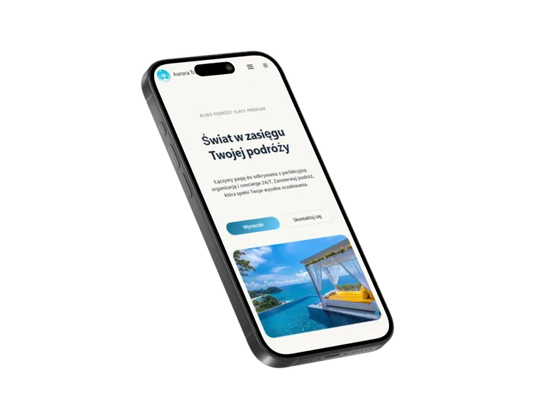
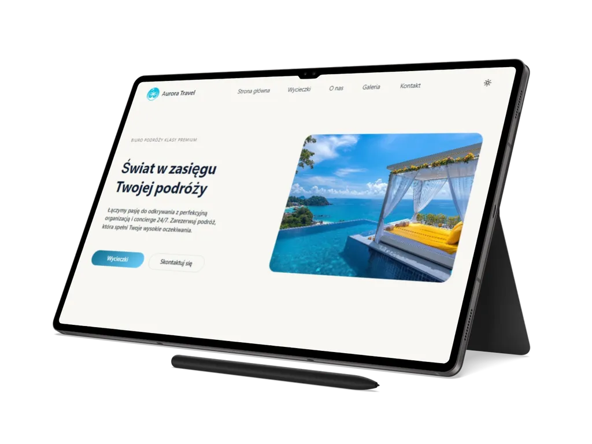
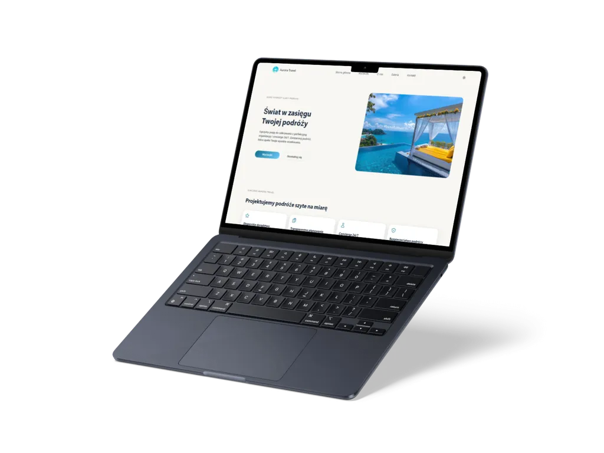

01
Aurora Travel
Wielostronicowy front-end biura podróży, który łączy ofertę wycieczek, galerię, formularz kontaktowy, PWA i techniczne przygotowanie pod statyczną publikację.
Przegląd projektu
Aurora Travel to statyczny serwis biura podróży zaprojektowany wokół ofert, szczegółów wycieczek, galerii i wygodnej ścieżki kontaktu.
Projekt obejmuje stronę główną, listę wycieczek, widok szczegółowy, galerię, sekcję o marce, kontakt, strony prawne oraz stany techniczne, w tym offline i 404.
Warstwa ofertowa opiera się na danych JSON, filtrowaniu i sortowaniu wycieczek
według typu, regionu, ceny oraz długości. Widok szczegółów wycieczki jest
renderowany dynamicznie na podstawie parametru URL i danych z
assets/data/tours.json.
Aurora wykorzystuje również dynamiczną galerię zasilaną przez
assets/data/gallery-data.json, lightbox, przełącznik motywu light/dark,
walidację formularza kontaktowego, Service Worker, manifest aplikacji webowej oraz
komplet elementów SEO dla stron indeksowanych.
StronyBiznesTurystykaBiuro podróży
Zakres i akcenty
Case study koncentruje się na praktycznych elementach serwisu podróżniczego: ofertach, danych, interakcjach użytkownika i standardzie publikacji statycznej.
02
Galeria i interakcje UI
03
SEO, PWA i publikacja
Technologie i standard
Aurora została zbudowana w statycznym stacku HTML, modularnym CSS i JavaScript ES Modules, z procesem buildowym oraz pipeline'em obrazów.
Dane ofert i galerii są utrzymywane w plikach JSON, a logika front-endowa jest rozdzielona na moduły funkcjonalne odpowiedzialne między innymi za nawigację, filtrowanie, lightbox, motyw i formularz.
-
PostCSS z
postcss-import,autoprefixericssnanodla CSS, - esbuild dla bundlowania i minifikacji JavaScriptu,
- sharp dla generowania wariantów obrazów oraz kontroli assetów,
- skip link, landmarki, atrybuty ARIA i powiązane komunikaty walidacyjne formularza.



Dalszy krok
Zobacz wielostronicowy serwis Aurora albo wróć do pełnego portfolio.
Aurora pokazuje, jak wielostronicowy serwis podróżniczy może połączyć ofertę, galerię, formularz i techniczne przygotowanie do publikacji statycznej.